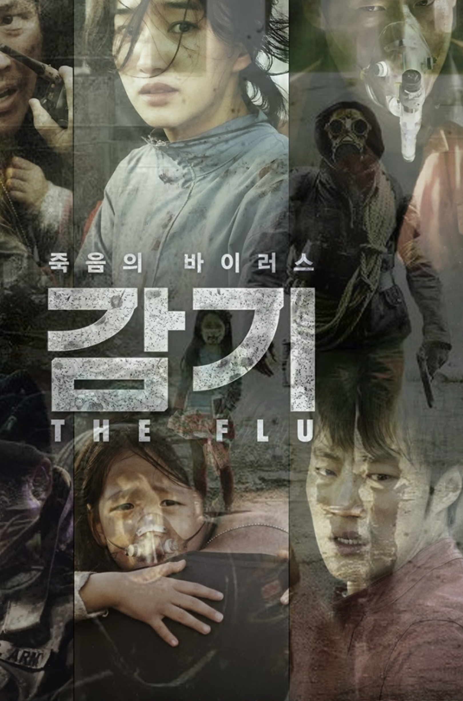

Flu
Kim Sung-su
The opening scene shows a group of illegal immigrants that are being prepared to be smuggled to South Korea inside a shipping container. As they are about to be sent overseas, one of the traffickers notices people coughing. After the immigrants deny any illness, he seals the container which is then sent to Korea. 9 days later, on May 1, the container reaches Pyongtaek harbor, and is transported inland.
The Korean version of the poster is divided into six sections that each contains actors of the film. The Korean poster is implying six different stories to survive. However, the US version looks too much like a horror film to be accurately representing the movie Flu.